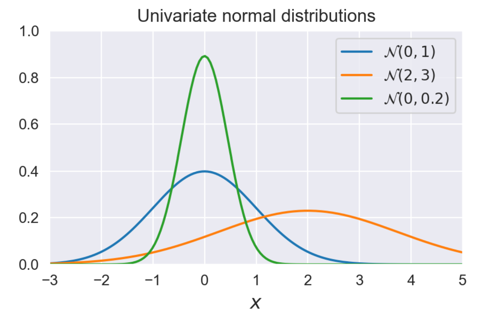

Advanced ML — Lecture 1: Preliminaries
Linear Algebra
Let \(A\in \mathbb{R}^{m\times n}\) be a matrix with entries \(A_{ij}\) where \(i\) indexes rows and \(j\) indexes columns.
Properties of matrices
\(AA^{-1}=A^{-1}A=I\)
\((AB)^{T}=B^{T}A^{T}\)
\((AB)^{-1} = B^{-1} A^{-1}\)
\((A^{\top})^{-1} = (A^{-1})^{\top}\)
\((A^{\top})^{\top} = A\)
\((A + B)^{\top} = A^{\top} + B^{\top}\)
Consequence \((A+BC)^{T}=A^{T}+C^{T}B^{T}\)
Symmetric matrix: \(A^{\top} = A\)
Positive definite: \(x^{\top} A x > 0\) for all non-zero \(x\) and \(A\) symmetric
All vectors in this course will be column vectors
Recall, if \(A \in \mathbb{R}^{m \times n}\) is a matrix and \(x \in \mathbb{R}^n\) a vector, then the \(i\)-th element of \(Ax\) is given by \((Ax)_i = \sum_{j=1}^n a_{ij} x_j\)
Vector Calculus
Let \(a \in \mathbb{R}^n\) and \(b \in \mathbb{R}^n\) be a vector, and \(x \in \mathbb{R}\) a scalar.
\(\left( \frac{\partial \mathbf{a}}{\partial x} \right)_i = \left( \frac{\partial }{\partial x} (a_{1}, \ldots ,a_{n})\right)_{i}=\left( \frac{\partial a_{1}}{x}, \ldots , \frac{\partial a_{n}}{x} \right)_{i}=\frac{\partial a_i}{\partial x}\)
\(\left( \frac{\partial x}{\partial \mathbf{a}} \right)_i= \left( \frac{\partial x}{\partial (a_1, \ldots, a_n)} \right)_i= \left( \frac{\partial x}{\partial a_1}, \ldots, \frac{\partial x}{\partial a_n} \right)_i= \frac{\partial x}{\partial a_i}\) scalar-vector derivative
\(\left( \frac{\partial \mathbf{a}}{\partial \mathbf{b}} \right)_{ij}= \left( \frac{\partial (a_1, \ldots, a_m)}{\partial (b_1, \ldots, b_n)} \right)_{ij}= \underset{\text{Jacobian matrix}}{ \begin{bmatrix} \frac{\partial a_1}{\partial b_1} & \cdots & \frac{\partial a_1}{\partial b_n} \\ \vdots & \ddots & \vdots \\ \frac{\partial a_m}{\partial b_1} & \cdots & \frac{\partial a_m}{\partial b_n} \end{bmatrix}_{ij}}= \frac{\partial a_i}{\partial b_j}\) vector-vector derivative.
Example: let \(a \in \mathbb{R}^n\) and \(x \in \mathbb{R}^n\). What is \(\frac{\partial}{\partial x} (x^\top a)\) ?
Solution: this is a scalar–vector derivative, thus \(\left( \frac{\partial}{\partial x} (x^\top a) \right)_i = \frac{\partial}{\partial x_i} (x^\top a) = \frac{\partial}{\partial x_i} \left( \sum_{j=1}^n a_j x_j \right) = a_i\)
Thus \(\frac{\partial}{\partial x} (x^\top a) = a^\top, \qquad \frac{\partial}{\partial x} (a^\top x) = a^\top\)
Another example. Let \(b \in \mathbb{R}^m\), \(A \in \mathbb{R}^{m \times n}\), and \(x \in \mathbb{R}^n\)
What is \(\frac{\partial}{\partial x}(b^\top A x)\)?Solution: this is a scalar–vector derivative, thus
\(\left( \frac{\partial}{\partial x}(b^\top A x) \right)_i = \frac{\partial}{\partial x_i}(b^\top A x) = \frac{\partial}{\partial x_i} \left( \sum_{k=1}^n \sum_{j=1}^m b_j a_{jk} x_k \right) = \sum_{j=1}^m b_j a_{ji} = \sum_{j=1}^m a_{ij}^\top b_j = (A^\top b)_i\)
Hence, \(\frac{\partial}{\partial x}(b^\top A x) = b^\top A\)
\(\frac{\partial x}{\partial x} = I\)
\(\frac{\partial (A x)}{\partial x} = A\)
\(\frac{\partial (x^\top A)}{\partial x} = A^\top\)
\(\frac{\partial (x^\top A x)}{\partial x} = x^\top (A + A^\top)\), and \(2 x^\top A\) if \(A\) is symmetric
\(\frac{\partial^2 (x^\top A x)}{\partial x \, \partial x^\top} = A + A^\top\), and \(2A\) if \(A\) is symmetric
Proof: \(\left( \frac{\partial x}{\partial x } \right)_{ij} = \frac{\partial x_i}{\partial x_j} = \begin{cases} 0, & \text{if } i \neq j, \\[6pt] 1, & \text{if } i = j \end{cases}\)
\(\frac{\partial (Ax)}{\partial x} = A\)
Proof: \(\left(\frac{\partial (Ax)}{\partial x}\right)_{ij} = \frac{\partial (Ax)_i}{\partial x_j} = \frac{\partial}{\partial x_j} \sum_{k=1}^n a_{ik} x_k = a_{ij}\)
\(\displaystyle \frac{\partial (x^\top A x)}{\partial x} = x^\top (A + A^\top)\)
Proof: \(\left(\frac{\partial (x^\top A x)}{\partial x}\right)_i= \frac{\partial}{\partial x_i}\!\left(\sum_{k=1}^n \sum_{l=1}^n a_{kl}\,x_l\,x_k\right) = \sum_{k=1}^n \sum_{l=1}^n a_{kl}\,\frac{\partial}{\partial x_i}(x_l x_k) =\)
\(= \sum_{k=1}^n a_{ki}\,x_k \;+\; \sum_{l=1}^n a_{il}\,x_l = (A^\top x)_i \;+\; (A x)_i\) Hence, \(\displaystyle \frac{\partial (x^\top A x)}{\partial x} = x^\top (A + A^\top)\)If \(a, b, x \in \mathbb{R}^n\), then \(\displaystyle \frac{\partial}{\partial x}\,(a^\top x x^\top b) = x^\top (ab^\top + ba^\top)\)
Proof: \(\frac{\partial}{\partial x_i}(a^\top x x^\top b) = \frac{\partial}{\partial x_i}\left(\sum_{k=1}^n a_k x_k \sum_{l=1}^n x_l b_l\right) = b_i \sum_{k=1}^n a_k x_k + a_i \sum_{l=1}^n x_l b_l\) \(= b_i a^\top x + a_i b^\top x = (b_i a^\top + a_i b^\top)x\)
Normal Distribution
The univariate normal distribution describes a random variable \(X\) with mean \(\mu\) and variance \(\sigma^2\). Its probability density function is given by:
\(p(x \mid \mu, \sigma^2) = \frac{1}{\sqrt{2\pi\sigma^2}} \exp\left(-\frac{1}{2\sigma^2}(x-\mu)^2\right)\).
This distribution is the foundation for much of probability and statistics, as it captures many naturally occurring phenomena due to the central limit theorem.
The bell-shaped curve shows how values close to the mean are more likely, with probabilities tapering off symmetrically on both sides.
Moments of the univariate normal
Let \(X \sim \mathcal N(\mu,\sigma^2)\) with pdf \(p(x)=\mathcal N(x\mid \mu,\sigma^2)\). Its first two moments and variance are
- \(\mathbb E[X]=\mu\)
- \(\mathbb E[X^2]=\mu^2+\sigma^2\)
- \(\mathrm{Var}[X]=\mathbb E[X^2]-\mathbb E[X]^2=\sigma^2\)
Mean.
\[ \mathbb E[X] = \int_{-\infty}^{\infty} x\,p(x)\,dx = \int_{-\infty}^{\infty} x \frac{1}{\sqrt{2\pi \sigma^2}} \exp\!\left(-\frac{1}{2\sigma^2} (x-\mu)^2\right)\,dx . \]
Change variables \(y=\dfrac{x-\mu}{\sigma}\) (so \(x=\mu+\sigma y\) and \(dx=\sigma\,dy\)):
\[ \mathbb E[X] = \int_{-\infty}^{\infty} (\mu+\sigma y)\,\phi(y)\,dy = \mu \underbrace{\int_{-\infty}^{\infty}\phi(y)\,dy}_{=1} \;+\; \sigma \underbrace{\int_{-\infty}^{\infty} y\,\phi(y)\,dy}_{=0} = \mu . \]
Here \[
\phi(y) = \frac{1}{\sqrt{2\pi}} \exp\!\left(-\frac{y^2}{2}\right),
\] which is the standard normal density.
Thus, \[
\int_{-\infty}^\infty \phi(y)\,dy = 1
\quad\text{and}\quad
\int_{-\infty}^\infty y\phi(y)\,dy = 0
\] since \(\phi(y)\) is even and \(y\phi (y)\) is an odd function.
Second moment.
\[ \mathbb E[X^2] = \int_{-\infty}^{\infty} x^2\,p(x)\,dx = \int_{-\infty}^{\infty} (\mu+\sigma y)^2\,\phi(y)\,dy = \mu^2 \!\!\underbrace{\int \phi}_{=1} + 2\mu\sigma \!\!\underbrace{\int y\phi}_{=0} + \sigma^2 \!\!\int_{-\infty}^{\infty} y^2 \phi(y)\,dy. \]
It remains to show \(\displaystyle \int_{-\infty}^{\infty} y^2 \phi(y)\,dy = 1\).
Auxiliary integral \(\displaystyle \int y^2 \phi(y)\,dy\).
Write it without the \(1/\sqrt{2\pi}\) factor, then put the factor back:
\[ \int_{-\infty}^{\infty} y^2 \phi(y)\,dy = \frac{1}{\sqrt{2\pi}}\int_{-\infty}^{\infty} y^2 e^{-y^2/2}\,dy . \]
Integration by parts with \(u=y\) and \(dv=y e^{-y^2/2}dy\) gives \(v=-e^{-y^2/2}\) and \(du=dy\), hence
\[ \int_{-\infty}^{\infty} y^2 e^{-y^2/2}\,dy = \Big[-y e^{-y^2/2}\Big]_{-\infty}^{\infty} + \int_{-\infty}^{\infty} e^{-y^2/2}\,dy = 0 + \sqrt{2\pi}. \]
Therefore \[ \int_{-\infty}^{\infty} y^2 \phi(y)\,dy = \frac{1}{\sqrt{2\pi}}\cdot \sqrt{2\pi} = 1. \]
Putting this into the second-moment expression:
\[ \mathbb E[X^2] = \mu^2 + \sigma^2. \]
Variance.
\[ \mathrm{Var}[X] = \mathbb E[X^2] - \big(\mathbb E[X]\big)^2 = (\mu^2+\sigma^2) - \mu^2 = \sigma^2. \]
Illustration of univariate normal distributions

The figure shows three different univariate normal distributions, each with different mean and variance. We observe that:
- The blue curve \(\mathcal N(0,1)\) is the standard normal: centered at \(0\) with unit variance, giving a moderate spread.
- The orange curve \(\mathcal N(2,3)\) has a larger variance. Its peak is flatter, and the distribution is spread more widely, reflecting greater uncertainty. The mean is shifted to \(2\), so the entire distribution is displaced to the right.
- The green curve \(\mathcal N(0,0.2)\) has a much smaller variance. It is sharply peaked around \(0\), reflecting low variability.
This comparison highlights the distinct roles of the mean \(\mu\) (shifting the center of the distribution) and the variance \(\sigma^2\) (controlling the spread).
Multivariate Normal Distribution
The multivariate normal distribution generalizes the univariate normal distribution to \(D\) dimensions. Its probability density function is given by:
\[ \mathcal{N}(x \mid \mu, \Sigma) = \frac{1}{(2\pi)^{D/2}} \frac{1}{|\Sigma|^{1/2}} \exp\left\{ -\tfrac{1}{2}(x - \mu)^\top \Sigma^{-1} (x - \mu) \right\}, \]
where:
- \(\mu\) is a \(D\)-dimensional mean vector, indicating the central location of the distribution.
- \(\Sigma\) is a \(D \times D\) covariance matrix, which must be symmetric and positive definite. It encodes the variances of individual dimensions along the diagonal, and covariances between dimensions in the off-diagonal entries.
- \(|\Sigma|\) denotes the determinant of \(\Sigma\), which measures the volume scaling of the distribution.
📌 Comment:
The covariance matrix \(\Sigma\) not only determines the spread of the distribution but also encodes correlations between variables. When \(\Sigma\) is diagonal, the variables are independent, and the distribution reduces to a product of independent univariate Gaussians. When off-diagonal terms are present, the shape becomes elliptical, reflecting correlations.
Bivariate Normal Examples
To visualize the role of the covariance matrix \(\Sigma\), consider the case of a bivariate normal .
When the covariance matrix is diagonal with no correlation, the variables are independent:
\[ \mathcal{N}\!\left(\begin{bmatrix} 0 \\ 0 \end{bmatrix}, \begin{bmatrix} 1 & 0 \\ 0 & 1 \end{bmatrix}\right) \]
The distribution is circular and symmetric, meaning \(x_1\) and \(x_2\) vary independently.
When the covariance matrix has strong off-diagonal terms, the variables are correlated:
\[ \mathcal{N}\!\left(\begin{bmatrix} 0 \\ 1 \end{bmatrix}, \begin{bmatrix} 1 & 0.8 \\ 0.8 & 1 \end{bmatrix}\right) \]
Here, the contours of the distribution become elliptical, indicating a linear relationship between \(x_1\) and \(x_2\).
📌 Comment:
This highlights how the covariance matrix \(\Sigma\) shapes the distribution.
- The diagonal entries control the spread (variance) of each variable.
- The off-diagonal entries introduce correlation, tilting and stretching the distribution along certain directions.